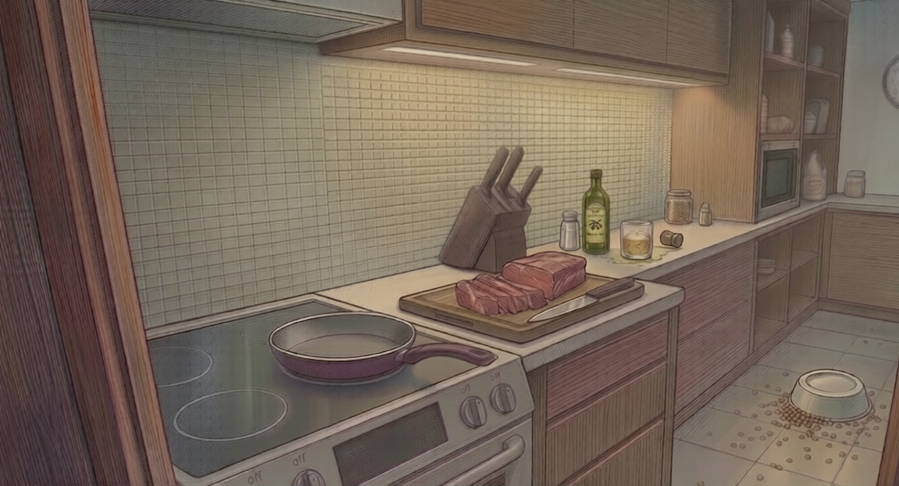

Ya casi termina. Observa bien esta última escena e identifica los objetos correctamente.

Observa bien. La imagen desaparecerá cuando el contador llegue a cero.
Selecciona 2 objetos
Tu testimonio coincide en las cuatro escenas. La policía da por cerrado el caso. ¿Quieres volver a intentarlo desde el principio?